相关理论
一维场即一维空间加上一维时间
基于拉氏量的路径积分
一维标量场给等效成空间内分立格点的（在空间维与时间维具有双重周期条件的）类似与固体物理的布洛赫定理的场。
核心方法：量子力学之中的变分法。稳定的经典场系统的作用量总是取最小值，量子力学之中不确定原理导致非最小作用量的状态仍然有机会出现。量子系统的具体状态由概率确定，由作用量小的状态向作用量大的状态变化（非时间演化）的概率由作用量的差值的负指数确定。
格点方法下的场的拉格朗日量。具体方法见ppt截图。
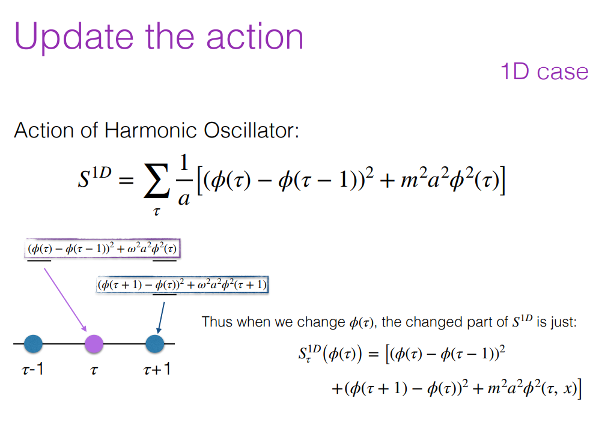
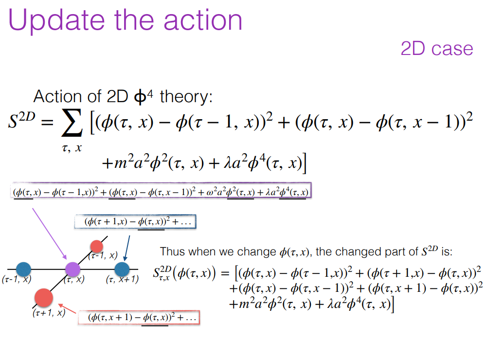
编程与计算
python与C++混合编程。C++编译计算模块加速运算性能，利用python的众多的数据处理与分析工具进行可视化输出与处理。
相关的C++程序：
1 |
|
编译指令：
1 |
|
python部分:
1 | import numpy as np |
面向对象的编程
1 | class zutai(object): |
1 | dd=zutai()#初始化 |
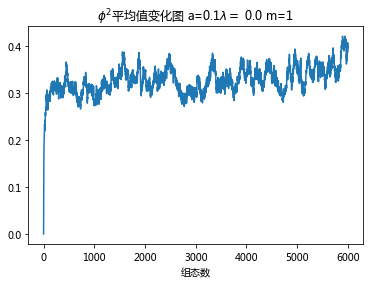
/home/yu/.local/lib/python3.6/site-packages/ipykernel_launcher.py:94: ComplexWarning: Casting complex values to real discards the imaginary part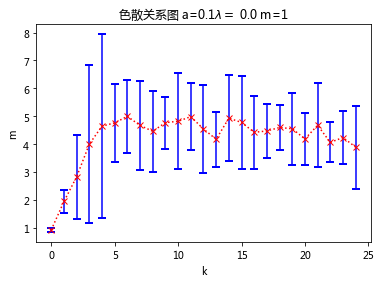
1 | d2=zutai(m=2)#初始化 |
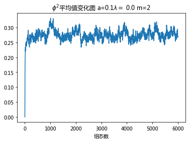
/home/yu/.local/lib/python3.6/site-packages/ipykernel_launcher.py:94: ComplexWarning: Casting complex values to real discards the imaginary part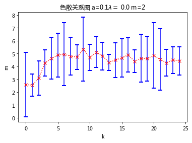
1 | [a,b]=d2.ek(jiange=74,St=3040)#数据不够理想，可以更改采样点 |
/home/yu/.local/lib/python3.6/site-packages/ipykernel_launcher.py:94: ComplexWarning: Casting complex values to real discards the imaginary part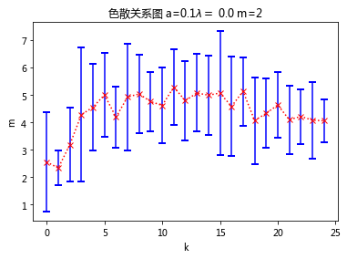
1 | d2=zutai(m=3)#初始化 |
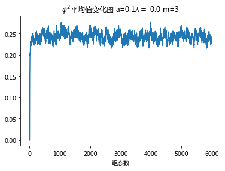
/home/yu/.local/lib/python3.6/site-packages/ipykernel_launcher.py:94: ComplexWarning: Casting complex values to real discards the imaginary part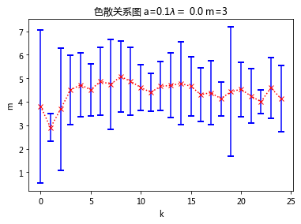
1 | [a,b]=d2.ek(jiange=27)#生成色散关系 |
/home/yu/.local/lib/python3.6/site-packages/ipykernel_launcher.py:94: ComplexWarning: Casting complex values to real discards the imaginary part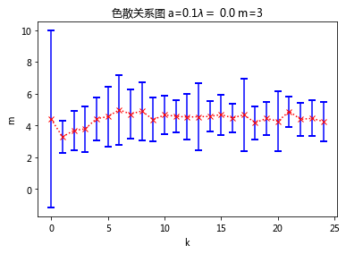
m越大越离谱，减小m试试看
1 | d2=zutai(m=0.5)#初始化 |
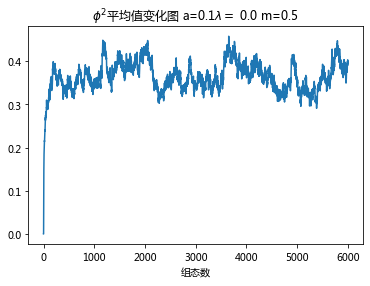
/home/yu/.local/lib/python3.6/site-packages/ipykernel_launcher.py:94: ComplexWarning: Casting complex values to real discards the imaginary part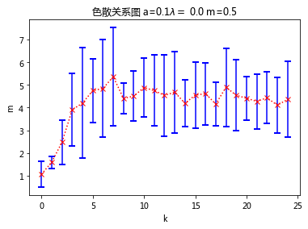
1 | d2=zutai(m=0.25)#初始化 |
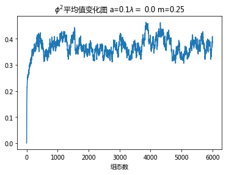
/home/yu/.local/lib/python3.6/site-packages/ipykernel_launcher.py:94: ComplexWarning: Casting complex values to real discards the imaginary part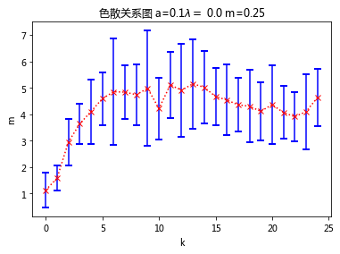
1 | d2=zutai(la=0.5)#初始化 |
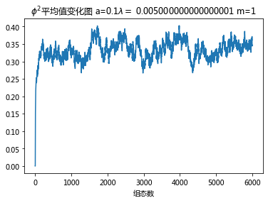
/home/yu/.local/lib/python3.6/site-packages/ipykernel_launcher.py:94: ComplexWarning: Casting complex values to real discards the imaginary part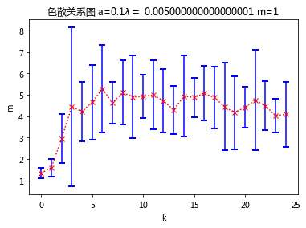
1 | d2=zutai(la=10)#初始化 |
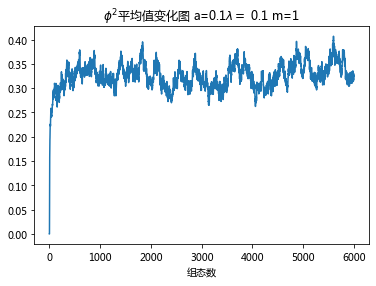
/home/yu/.local/lib/python3.6/site-packages/ipykernel_launcher.py:94: ComplexWarning: Casting complex values to real discards the imaginary part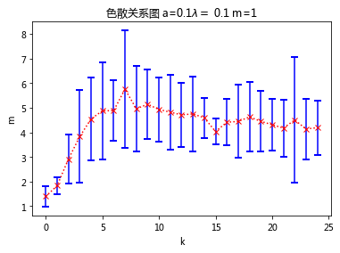
1 | d2=zutai(la=0.5)#初始化 |
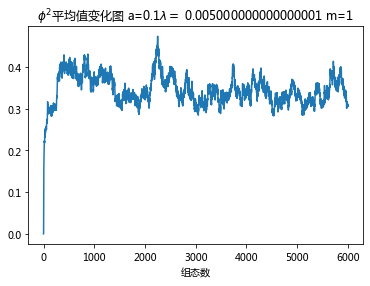
/home/yu/.local/lib/python3.6/site-packages/ipykernel_launcher.py:94: ComplexWarning: Casting complex values to real discards the imaginary part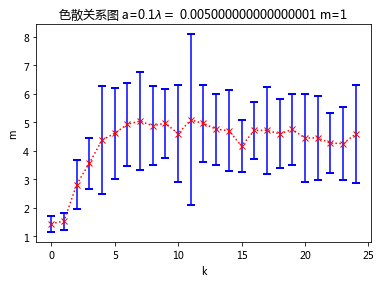
1 | d2=zutai(la=1,a=0.1)#初始化 |
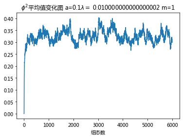
/home/yu/.local/lib/python3.6/site-packages/ipykernel_launcher.py:94: ComplexWarning: Casting complex values to real discards the imaginary part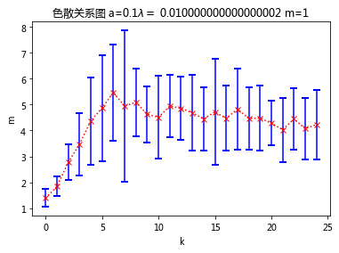
1 | d2=zutai(la=1,a=0.05)#初始化 |
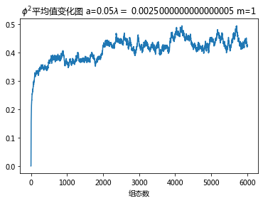
/home/yu/.local/lib/python3.6/site-packages/ipykernel_launcher.py:94: ComplexWarning: Casting complex values to real discards the imaginary part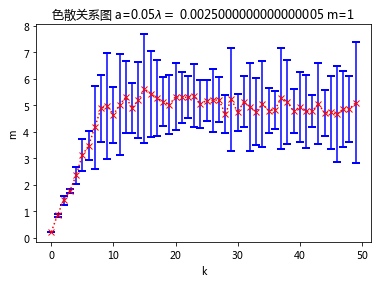
1 | d2=zutai(la=1,a=0.2)#初始化 |
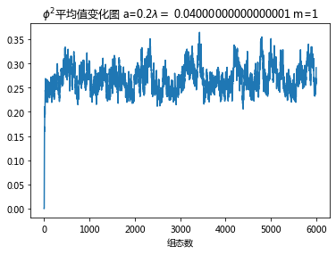
/home/yu/.local/lib/python3.6/site-packages/ipykernel_launcher.py:94: ComplexWarning: Casting complex values to real discards the imaginary part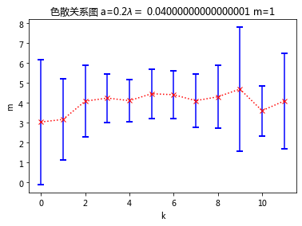
1 | d2=zutai(la=1,a=0.125)#初始化 |
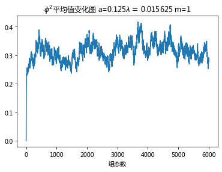
/home/yu/.local/lib/python3.6/site-packages/ipykernel_launcher.py:94: ComplexWarning: Casting complex values to real discards the imaginary part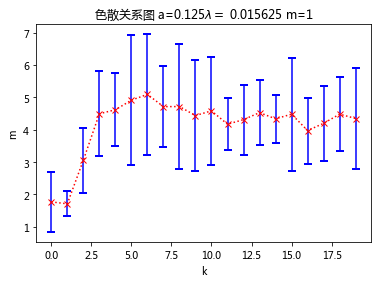
数据点过少，结果看看就行，不要当真。